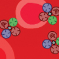
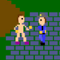
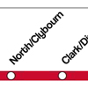
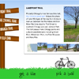
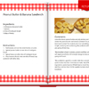

Materials Research Institute, Flash Developer
|  | Nanobomber A game meant to teach high school students about nanoscale drug-delivery by mimicking the real-world process of designing nanomedicine and simulating the effect of releasing it into the bloodstream; showcased by the Materials Research Institute in the National Nanotechnology Initiative at Ten: Nanotechnology Innovation Summit in Washington, DC on Dec 8-10, 2010. (2 person project, contributed 3000 lines of Actionscript 3.0 code) |
||
| Sammy the Superscaler in 'The Great Scale Adventure' A game meant to teach middle school students about size and scale by putting the player in environments at certain scales and having them remove the objects that do not belong at that scale. This is the first of two games meant to support the MRI's 'Size and Scale' lesson module. (solo project, 3000 lines of Actionscript 3.0 code) |
|||

|
Sammy the Superscaler in 'The Superscaler Sorting Factory' A game meant to teach middle school students about size and scale by having the player sort a collection of objects passing by on a conveyor belt into eight different scales, denoted by metric prefixes. This is the second of two games meant to support the MRI's 'Size and Scale' lesson module. (solo project, 1900 lines of Actionscript 3.0 code) |
||
| How a Dye Sensitized Solar Cell Works An animated slideshow with a supplemental game to help high school students understand the basic processes that occur within a dye sensitized solar cell. (2 person project, contributed 1800 lines of Actionscript 3.0) |
North by Northwestern, Assistant Interactive Editor
| Cops vs. Streakers NBN's first video game, meant to supplement a recent story about an arrest of a group of Northwestern students who painted their bodies purple and ran naked across campus to show their Wildcat pride for the home football game that weekend. (4 person project, contributed 1100 lines of Actionscript 3.0 code) |
 | ||
| NBN's Guide to the Red Line An interactive guide created for Northwestern students with information compiled by several reporters about what to do, where to eat, and where to shop at every stop on the CTA Red Line from Howard to Lake; the guide has a lot of content embedded, and may take some time to load (3 person project, contributed 1000 lines of Actionscript 3.0 code) |
 | ||
| NBN's Bike Guide Another interactive guide created for Northwestern students with information about how to get a bike, where to ride it, and how to prepare for the ride. (4 person project, contributed 300 lines of Actionscript 3.0 code) |
 | ||
| NBN's Breakfast Guide An interactive compilation of a writer's favorite breakfast recipes with additional functions to filter the recipes by taste or ingredients. (solo project, 250 lines of Actionscript 3.0) |
 |